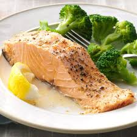

Baked Salmon

"insert paragraph long description of salmon that requires
miles of scrolling instead of just getting to the recipe."
Ingredients:
- Literally salmon
- Tonys Creole Seasoning
- Lemon Juice
Steps:
- Preheat oven to 425 degrees
- Cut salmon to size
- Slap some Tony's Creole Seasoning and lemon juice on it
- Bake 15-18 minutes or until meat flakes off
- Eat it up